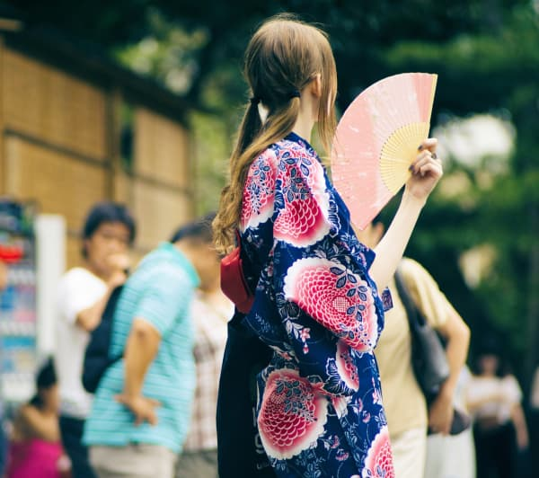

Haru Matsuri
19th Edition, Japanese FestivalThe Nikkei community of São Paulo will celebrate, on October 13 and 14 (Saturday and Sunday),
at the "São Paulo expo imigrantes", the arrival of the flower season, at the 19th Haru Matsuri - Spring Festival. It will be a feast in gratitude to nature for its beauty and prosperous days.
"If you want to succeed in life,
you must learn from your failures."
- Kizaemon Takeuchi.
The event aims to preserve and disseminate Japanese culture and maintain traditions for the new generations, representing the 47 provinces that make up the country.
Ikebanas exhibition, artistic and cultural presentations on stage, workshops, craft stands and various products, in addition to the great food court of Japanese gastronomy (running throughout the event) are part of the cultural program.
“人生には、テキストもノートも助っ人も、
何でも持ち込めます。”
On Sunday (14) Yosakoi Soran takes place. A Japanese folk dance festival, in which the public can follow performances and even learn part of the dance with workshops promoted by the artists.
Another featured attraction is the miss Nikkey Brasil, a contest with prizes for the most beautiful Japanese descendant in Brazil.
Last year there were about 700 candidates from all over the country to compete for the crown.
- HARU MATSURI
- October 13th and 14th
- Tickets: R$ 7,00 or R$ 10,00 (for 2 days)
- Sat(10:00 am to 20:00 pm) Sun(10:00 am to 18:00 pm)
- Children under 8 don't pay
- São Paulo Expo - São Paulo/SP
- Rod. dos Imigrantes - Vila Água Funda 15, 04329-900
On Sunday (14/10), the RKMD group - RyukyuKoku Matsuri Daiko (Taiko from Okinawa) will perform with the participation of members of the branches in Curitiba, São Paulo and Londrina, as well as guests such as enka singer Ricardo Nakase and the odori academy: Takaryu Hananokai Brazil.
On Saturday, singer Ricardo Nakase will perform solo.
The official opening ceremony of the event will be on Saturday (13/10) at 9 am, but activities start at 10 am, on both days, and continue on Saturday until 8 pm and on Sunday until 6 pm.